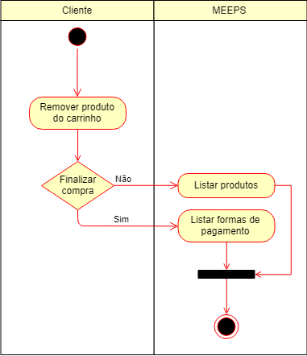

Remover do carrinho - UC017
O comprador poderá remover um ou mais produtos adicionados no carrinho
Ator:
Pré-condições
- O comprador deverá estar logado
- O sistema deve ter produtos cadastrados
- Terá de haver pelo menos um produto no carrinho
Fluxo Principal

Pós-condições
- O produto selecionador pelo comprador deverá ser removido do carrinho